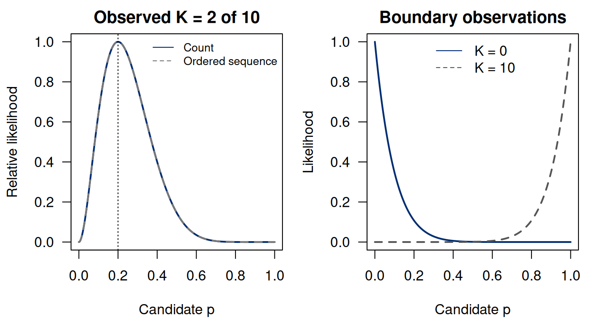
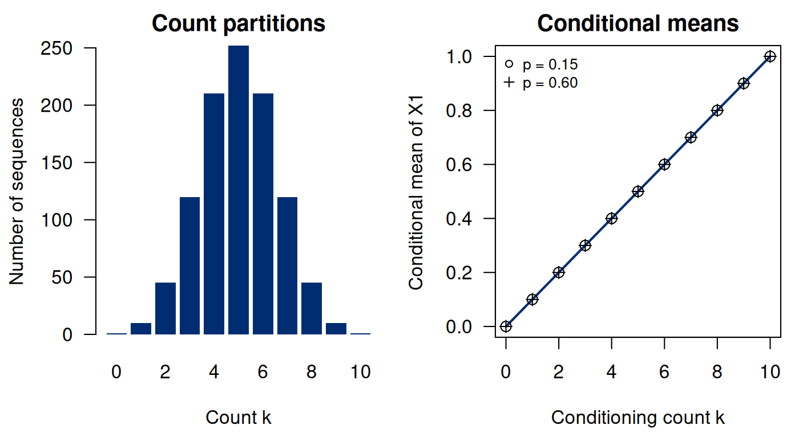

Notes on Statistical Inference
Chapter 2. Likelihood, data reduction, and constructing estimators
Chapter 1 fixed a model value and calculated probabilities of possible data. We now fix the observed data and compare model values. This change of viewpoint produces a likelihood function. It does not, by itself, produce a probability distribution over the parameter.
Keep the synthetic binary-outcome study and suppose the observed sample contains two events among ten independent people. The example is small enough to solve analytically and enumerate exactly. We will derive its maximum likelihood estimator, examine the boundary cases that a score equation misses, and show why the event count retains the model’s information about the common probability. We then use conditioning to construct an estimator from an intentionally inefficient starting point. With each construction, we will ask what the argument establishes about the estimator.
2.1 The same expression, a different argument
For observed , define (2.1) Here the data are fixed and varies. We use calligraphic for likelihood, reserving ordinary for a separately defined loss in decision theory. For two candidate values, a likelihood ratio compares how much probability they assign to the same observed sequence. A larger value means better agreement with that observation in this particular comparison; it is not the probability that the candidate parameter is correct.
If we observe only the count, its likelihood is (2.2) For the fixed observed count, the extra factor does not depend on . It therefore cancels in likelihood ratios and does not change the maximizer. It could not be dropped when calculating in Chapter 1: probability calculations must account for all sequences contributing to an event. Proportional likelihoods and equal probabilities are different statements.
At , comparing with gives (2.3) The observed data favor over in this likelihood-ratio sense. The ratio is not posterior odds unless prior odds and a Bayesian model have also been specified. It is not a tail probability or the probability of obtaining data at least as extreme as these.
A relative likelihood divides the likelihood by its maximum. Its peak is one, making plots easier to compare. Normalizing a curve to have peak one does not make its integral one. Even normalizing its integral with respect to introduces a choice of parameterization; it does not create a parameter-free inferential interpretation. In Bayesian inference (Chapter 8), we specify a prior and derive the resulting posterior. That specification is the additional step needed to interpret a normalized likelihood as a posterior.
2.2 Constructing the maximum likelihood estimator
The likelihood ratio compares two specified candidates. We now let the candidate vary over the allowed parameter space and find the value that gives the observed data the greatest likelihood. For , the log likelihood, up to a term constant in , is (2.4) Because logarithm is strictly increasing, maximizing the positive likelihood is equivalent to maximizing its logarithm. The logarithm turns the product over observations into a sum and often makes differentiation and numerical calculation more stable.
For an interior observation , the score and curvature are (2.5, 2.6) The score vanishes at . Strict concavity makes this the unique interior maximum. Moreover, the likelihood tends to zero at both endpoints when both events and nonevents have been observed. Together these facts establish the global maximum on : (2.7) The estimator is the rule applied to random data. The estimate in our sample is the number .
At that observed maximum, the score is zero and the negative curvature is . A sharply curved log likelihood indicates a more rapid local decrease when a candidate parameter moves away from the maximizer. This is useful information about the observed likelihood shape, but converting curvature into an uncertainty interval requires an additional inferential argument. A plot alone does not establish interval coverage.
The implementation below checks three separate claims: count and sequence likelihoods differ by the combinatorial factor; a grid and continuous optimization recover the interior maximum; and the analytic curvature agrees with a numerical second difference. Numerical agreement is useful evidence about the implementation. The concavity and endpoint argument explain why the answer is global.
Run the complete R example
Dependencies: base R. This complete block includes the data, setup and calculations. Run it in a fresh R session. Short code excerpts above explain individual steps; this block supplies their shared setup. Figures and tables are written to a temporary directory.
Complete R example
# Complete R example. Synthetic data; no external files are required.
local({
previous.directory <- getwd()
example.directory <- tempfile("biomedical-example-")
dir.create(example.directory)
setwd(example.directory)
on.exit(setwd(previous.directory))
dir.create("generated",showWarnings=FALSE)
# Likelihood and exact conditional enumeration.
dir.create("generated",showWarnings=FALSE)
n <- 10L; observed.k <- 2L
grid <- seq(0,1,length.out=1001)
count.likelihood <- dbinom(observed.k,n,grid)
sequence.likelihood <- grid^observed.k*(1-grid)^(n-observed.k)
stopifnot(max(abs(count.likelihood-
choose(n,observed.k)*sequence.likelihood))<1e-12)
relative <- count.likelihood/max(count.likelihood)
stopifnot(abs(grid[which.max(relative)]-observed.k/n)<1e-12)
fit <- optimize(function(z) -dbinom(observed.k,n,z,log=TRUE),
interval=c(1e-10,1-1e-10),tol=1e-10)
stopifnot(abs(fit$minimum-observed.k/n)<1e-6)
for(kk in 0:n)
stopifnot(abs(grid[which.max(dbinom(kk,n,grid))]-kk/n)<1e-12)
score <- function(z) observed.k/z-(n-observed.k)/(1-z)
curvature <- function(z) -observed.k/z^2-(n-observed.k)/(1-z)^2
h <- 1e-4
ll <- function(z) dbinom(observed.k,n,z,log=TRUE)
numcurv <- (ll(.2+h)-2*ll(.2)+ll(.2-h))/h^2
stopifnot(abs(score(.2))<1e-12,abs(curvature(.2)+62.5)<1e-12,
abs(numcurv-curvature(.2))<.001)
# Enumerate all ordered samples, so conditional checks have no Monte Carlo error.
x <- as.matrix(expand.grid(rep(list(0:1),n)))
K <- rowSums(x)
stopifnot(nrow(x)==2^n,sum(K==observed.k)==choose(n,observed.k))
ct <- do.call(rbind,lapply(c(.15,.60),function(p) {
w <- p^K*(1-p)^(n-K)
wk <- w[K==observed.k]/sum(w[K==observed.k])
stopifnot(max(abs(wk-1/choose(n,observed.k)))<1e-12)
cm <- vapply(0:n,function(j) sum(x[K==j,1]*w[K==j])/sum(w[K==j]),0.0)
stopifnot(max(abs(cm-(0:n)/n))<1e-12)
data.frame(p=p,k=0:n,conditional.mean=cm)
}))
write.csv(ct,"generated/ch02-conditional-means.csv",row.names=FALSE)
write.csv(data.frame(grid,count.likelihood,sequence.likelihood,relative),
"generated/ch02-likelihood.csv",row.names=FALSE)
write.csv(data.frame(sequence=apply(x[K==2,],1,paste0,collapse=""),
conditional.probability=1/45),
"generated/ch02-conditional-sequences.csv",row.names=FALSE)
p <- .15; w <- p^K*(1-p)^(n-K)
v1 <- sum((x[,1]-p)^2*w); vk <- sum((K/n-p)^2*w)
stopifnot(abs(v1-p*(1-p))<1e-12,abs(vk-p*(1-p)/n)<1e-12)
writeLines(c("\\begin{tabular}{lrr}","\\toprule",
"Quantity & Exact calculation & Value \\\\","\\midrule",
"Sequences with $K=2$ & $\\binom{10}{2}$ & 45 \\\\",
sprintf("Each conditional probability & $1/45$ & %.6f \\\\",1/45),
"$E_p(X_1\\mid K=2)$ & $2/10$ & 0.200000 \\\\",
sprintf("$\\mathrm{Var}_{0.15}(X_1)$ & $p(1-p)$ & %.6f \\\\",v1),
sprintf("$\\mathrm{Var}_{0.15}(K/10)$ & $p(1-p)/10$ & %.6f \\\\",vk),
"\\bottomrule","\\end{tabular}"),"generated/ch02-enumeration-table.tex")
save.plot <- function(stem,draw) {
pdf(paste0("generated/",stem,".pdf"),width=7,height=3.8);draw();dev.off()
png(paste0("generated/",stem,".png"),width=1400,height=760,res=200);draw();dev.off()
}
save.plot("ch02-likelihood",function() {
par(mfrow=c(1,2),mar=c(4.2,4.2,2,0.8),las=1)
plot(grid,relative,type="l",lwd=2,col="#002D72",xlab="Candidate p",
ylab="Relative likelihood",main="Observed K = 2 of 10")
lines(grid,sequence.likelihood/max(sequence.likelihood),lty=2,lwd=2,col="#777777")
abline(v=.2,lty=3)
legend("topright",c("Count","Ordered sequence"),lty=c(1,2),
col=c("#002D72","#777777"),bty="n",cex=.8)
plot(grid,dbinom(0,n,grid),type="l",lwd=2,col="#002D72",
xlab="Candidate p",ylab="Likelihood",main="Boundary observations")
lines(grid,dbinom(n,n,grid),lty=2,lwd=2,col="#555555")
legend("top",c("K = 0","K = 10"),col=c("#002D72","#555555"),lty=c(1,2),bty="n")
})
save.plot("ch02-conditioning",function() {
par(mfrow=c(1,2),mar=c(4.2,4.2,2,0.8),las=1)
barplot(choose(n,0:n),names.arg=0:n,col="#002D72",border=NA,
xlab="Count k",ylab="Number of sequences",main="Count partitions")
plot(0:n,(0:n)/n,type="l",lwd=2,col="#002D72",ylim=c(0,1),
xlab="Conditioning count k",ylab="Conditional mean of X1",main="Conditional means")
points(0:n,ct$conditional.mean[ct$p==.15],pch=1,cex=1.2)
points(0:n,ct$conditional.mean[ct$p==.60],pch=3)
legend("topleft",c("p = 0.15","p = 0.60"),pch=c(1,3),bty="n",cex=.8)
})
writeLines(capture.output(sessionInfo()),"generated/ch02-sessionInfo.txt")
cat("\nSelected numerical results\n")
for (candidate in c("reader", "summary", "summary.mc", "perf", "comparison", "route.comparison", "test", "tab", "exact", "workflow.ci", "coef.tab", "evaluation.table")) {
if (exists(candidate, inherits=FALSE)) {
value <- get(candidate, inherits=FALSE)
if (is.data.frame(value) || is.matrix(value)) { cat(candidate, "\n"); print(utils::head(value,8)) }
}
}
cat("R", as.character(getRversion()), "\n")
})
This excerpt shows a step inside the preceding complete R example; it uses that block’s data and setup.
n <- 10L; observed.k <- 2L
grid <- seq(0,1,length.out=1001)
count.likelihood <- dbinom(observed.k,n,grid)
sequence.likelihood <- grid^observed.k*(1-grid)^(n-observed.k)
stopifnot(max(abs(count.likelihood-
choose(n,observed.k)*sequence.likelihood))<1e-12)
relative <- count.likelihood/max(count.likelihood)
stopifnot(abs(grid[which.max(relative)]-observed.k/n)<1e-12)
fit <- optimize(function(z) -dbinom(observed.k,n,z,log=TRUE),
interval=c(1e-10,1-1e-10),tol=1e-10)
stopifnot(abs(fit$minimum-observed.k/n)<1e-6)
for(kk in 0:n)
stopifnot(abs(grid[which.max(dbinom(kk,n,grid))]-kk/n)<1e-12)
score <- function(z) observed.k/z-(n-observed.k)/(1-z)
curvature <- function(z) -observed.k/z^2-(n-observed.k)/(1-z)^2
h <- 1e-4
ll <- function(z) dbinom(observed.k,n,z,log=TRUE)
numcurv <- (ll(.2+h)-2*ll(.2)+ll(.2-h))/h^2
stopifnot(abs(score(.2))<1e-12,abs(curvature(.2)+62.5)<1e-12,
abs(numcurv-curvature(.2))<.001)

2.3 Boundaries are part of the problem
When , the likelihood is , decreasing throughout the interior. Its maximum on is at . There is no interior score root. When , the likelihood is , with maximum at . Thus the formula still works on the closed parameter space, but a derivation that simply solves the score equation has omitted these cases.
Now change the parameter space to . For , likelihood values approach their supremum as approaches zero, but no permitted value attains it. There is no MLE in that open parameter space. Reporting zero without explaining the extension to the closure changes the stated optimization problem. This distinction is important in more complicated models where a numerical routine returns a very large finite coefficient while the likelihood is maximized only at an infinite limit.
Constraints also change the answer. If scientific knowledge genuinely restricts , the likelihood is increasing over the allowed interval, so the constrained maximum is , not . A constraint should represent a justified model choice, not an after-the-fact device for obtaining a preferred estimate.
For software, boundary-safe likelihood evaluation matters. Directly writing at or can produce undefined arithmetic even when the probability has a well-defined limit. The base R binomial mass function handles those endpoint probabilities. A numerical optimizer over a small interior interval is appropriate for checking our interior example, but it does not prove what happens at an excluded endpoint.
2.4 Why the count is sufficient
A statistic is a function of the data that does not depend on the unknown parameter. The count partitions the possible binary sequences into groups: all sequences with zero events, all sequences with one event, and so on. Within each group, the order and positions of events differ.
For any compatible sequence with count , and , (2.8) The conditional distribution does not depend on . Conditional on the count, the remaining randomness in the ordered sequence is therefore irrelevant for distinguishing members of this Bernoulli model. This is the definition of sufficiency in the present discrete setting.
At , all 45 compatible sequences have conditional probability , whether the candidate parameter is or . At the boundary model values, only the possible count needs a conditional distribution; conditioning on an impossible count is not defined by this ratio. These zero-probability qualifications do not invalidate sufficiency.
An exact computational check enumerates the entire sample space instead of approximating it with random draws. Each row of the matrix below is an ordered binary sequence. The script weights rows under two parameter values, conditions on , and checks both uniformity and conditional means.
This excerpt shows a step inside the preceding complete R example; it uses that block’s data and setup.
# Enumerate all ordered samples, so conditional checks have no Monte Carlo error.
x <- as.matrix(expand.grid(rep(list(0:1),n)))
K <- rowSums(x)
stopifnot(nrow(x)==2^n,sum(K==observed.k)==choose(n,observed.k))
ct <- do.call(rbind,lapply(c(.15,.60),function(p) {
w <- p^K*(1-p)^(n-K)
wk <- w[K==observed.k]/sum(w[K==observed.k])
stopifnot(max(abs(wk-1/choose(n,observed.k)))<1e-12)
cm <- vapply(0:n,function(j) sum(x[K==j,1]*w[K==j])/sum(w[K==j]),0.0)
stopifnot(max(abs(cm-(0:n)/n))<1e-12)
data.frame(p=p,k=0:n,conditional.mean=cm)
}))| Quantity | Exact calculation | Value |
|---|---|---|
| Sequences with | 45 | |
| Each conditional probability | 0.022222 | |
| 0.200000 | ||
| 0.127500 | ||
| 0.012750 |
The cancellation also explains the factorization criterion. In the finite discrete case, suppose (2.9) where the factorization functions are nonnegative and does not depend on . For an attainable value , (2.10) The common cancels, proving sufficiency whenever the conditioning event has positive probability. The functions in a factorization need not individually be probability mass functions. In particular, is a useful factor even though it is missing the binomial coefficient needed for the count’s mass function. More general dominated-model versions of the theorem require the corresponding measure-theoretic qualifications; the finite argument is enough for our example.
2.5 Sufficiency is relative to a model
It would be a mistake to interpret sufficiency as permission to destroy the individual records. A pattern such as many events concentrated in one family, site, or period might challenge the assumptions of independence or a common event probability. The count can preserve all information about within a specified model while discarding information useful for questioning that model.
For a simple contrast, let and be independent with distinct unknown probabilities and . The sequences and have the same total but probabilities and . Their ratio depends on the parameter pair. Knowing which individual had the event now helps distinguish models. The total is not sufficient for .
This is why data reduction and data retention answer different questions. The reduced statistic may be all that one calculation requires, while design variables, original measurements, missingness indicators, and identifiers remain necessary for checking assumptions and reproducing the analysis. The scientific meaning of the ordering also matters: exchangeability in the initial model is an assumption, not a license to ignore time or cluster structure in every study.
2.6 Conditioning can construct a better estimator
The parameter-free conditional distribution gives us more than a data-reduction statement. We can use it to average an estimator over the ordering that the count does not retain. Suppose, deliberately inefficiently, that we estimate using only the first observation, . It is unbiased because . Given , symmetry makes each position equally likely to contain an event. More explicitly, for , exactly of the sequences have their first coordinate equal to one. Their ratio is ; at the first coordinate is necessarily zero. Thus (2.11) Averaging over the parameter-free conditional distribution produces the implementable estimator . We do not have to know to calculate it.
The law of total variance states (2.12) The final term is nonnegative, so conditioning cannot increase variance here. Direct calculation gives for and for . Both estimators are unbiased; the second uses all observations in this model. At , the variances are and .


Conditioning is not automatically a recipe for a statistic. For example, (2.13) depends on the unknown parameter. It is a legitimate conditional expectation, but the displayed expression is not an estimator computable from the data alone. Sufficiency helps in the earlier construction precisely because it removes the unknown parameter from the conditional distribution.
The argument establishes a comparison between two estimators under this model and squared-error loss, using unbiasedness to equate MSE with variance. It does not establish that every unbiased estimator is preferable to every biased one. Nor does it establish optimality for a clinical or operational action. Those stronger conclusions would need different premises.
2.7 Construction is not evaluation
The method of moments provides another route to : equate the empirical mean with the model moment . Agreement with maximum likelihood in this example is useful, but the two construction principles need not agree in other models. Neither principle eliminates the need to assess bias, variability, support, robustness, or the loss relevant to use.
Transformations need similar care. If the target is , a plug-in construction gives . Substituting a reasonable estimator into a nonlinear function does not preserve unbiasedness. In fact, the moment identities from Chapter 1 imply that its expectation is . The resulting bias is a property to understand, not a reason to discard the estimator before considering the evaluation criterion.
The count gives us an estimate of one common event probability. If the question instead concerns an association after accounting for age or another marker, one common probability is no longer the target. The next chapter makes that change explicit through conditional regression: we specify the outcome distribution given the included predictors and derive the coefficient being estimated. We will then return to this binary experiment to compare estimators under a stated loss in Chapter 4.
2.8 Exercises
Maxima depend on the parameter space. For an independent Bernoulli sample of size , use the observed-count likelihood to find the MLE when under each parameter space and . Then find the MLE when and . Distinguish an attained maximum from a supremum and explain why solving a score equation is not sufficient.
Factorization on a finite sample space. On a finite sample space, suppose for nonnegative functions . For a value with , derive . Explain why it does not depend on , why the positivity condition matters, and why need not itself be a probability mass function.
Sufficiency belongs to a model. Let independent and , with , and let . Derive and use two parameter settings to show that is not sufficient for the unrestricted pair. Contrast the common-probability submodel .
Conditional averaging must yield an estimator. For independent identically distributed Bernoulli variables , with and , let . Derive , its squared-error risk for estimating , and its improvement over . Also derive and explain why it is not an implementable statistic for unknown .